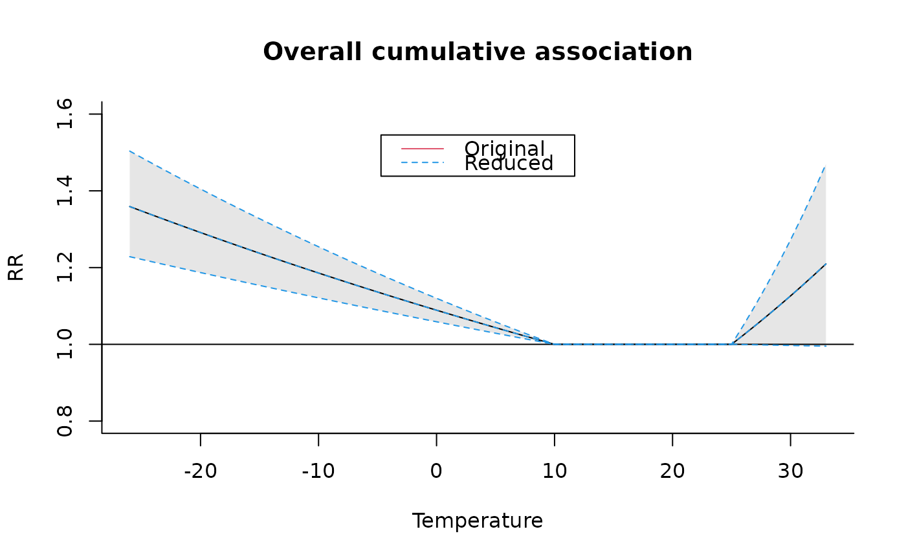
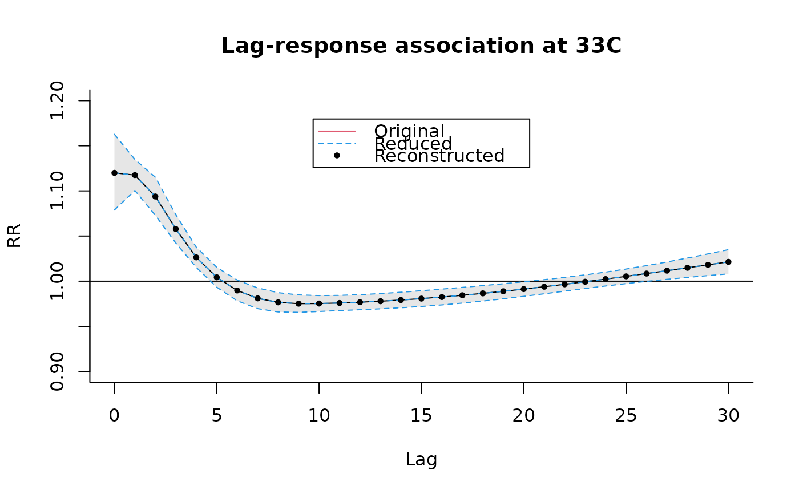

crossreduce.RdThe function reduces the fit of bi-dimensional distributed lag linear (DLMs) or non-linear (DLNMs) models to summaries defined in the the dimension of predictor or lags only, and re-expresses it in terms of modified parameters of the one-dimensional basis functions chosen for that space.
crossreduce(basis, model=NULL, type="overall", value=NULL, coef=NULL, vcov=NULL,
model.link=NULL, at=NULL, from=NULL, to=NULL, by=NULL, lag, bylag=1, cen=NULL,
ci.level=0.95)
# S3 method for class 'crossreduce'
summary(object, ...)an object of class "crossbasis".
a model object for which the reduction and prediction are desired. See Details below.
user-provided coefficients, (co)variance matrix and model link for the reduction and then prediction. See Details below.
type of reduction. Possible options are "overall" (default) for reduction to the overall cumulative exposure-response association, "lag" for reduction to a lag-specific exposure-response association, or "var" for reduction to a predictor-specific lag-response association. See Details below.
the single value of predictor or lag at which predictor-specific or lag-specific associations must be defined, respectively. See Details below.
vector of values used for prediction in the dimension of predictor.
range of predictor values used for prediction.
either an integer scalar or vector of length 2, defining the lag range used for prediction. Defalut to values used for estimation.
increment of the sequences of predictor and lag values used for prediction.
logical or a numeric scalar. It specifies the centering value, then used as a reference for predictions. See Details below.
confidence level for the computation of confidence intervals.
an object of class "crossreduce".
additional arguments to be passed to summary.
The dimension to which the fit is reduced is chosen by type, computing summaries for overall cumulative or lag-specific associations defining an exposure-response relationship in the predictor space, or predictor-specific associations defining a lag-response relationship in the lag space. The function re-expresses the original fit of the model, defined by the parameters of the bi-dimensional cross-basis functions, in summaries defined by the one-dimensional basis for the related space and a (usually smaller) set of modified parameters.
Similarly to crosspred, the object basis must be the same containing the cross-basis matrix included in model, with its attributes and class. The function computes predictions for specific values of predictor (for type equal to "overall" and "lag") or lag (for for type equal to "var"). Values are set to default or chosen thorugh at/from/to/by and lag/bylag, respectively.
Predictions are computed versus a reference value, with default values dependent on the function used in basis, or manually set through cen. Briefly, sensible default values are automatically defined for strata, thr and integer (corresponding to the reference region), and for lin (corresponding to 0). For other choices, such as ns, bs, poly or other existing or user-defined functions, the centering value is set by default to the mid-range. The inclusion of the intercept in basis term nullifies the centering.
Exponentiated predictions are included if model.link is equal to "log" or "logit". Confidence intervals computed using a normal approximation and a confidence level of ci.level. model.link is automatically selected from model for some classes when set to NULL (default), but needs to be provided for different classes.
The function automatically works with model objects from regression function lm and glm, gam (package mgcv), coxph and clogit (package survival), lme and nlme (package nlme), lmer and glmer and nlmer (package lme4), gee (package gee), geeglm (package geepack). The function also works with any regression function for which coef and vcov methods are available and return appropriately named objects. Otherwise, the user needs to input the coefficients and associated (co)variance matrix related to the parameters of the crossbasis as arguments coef and vcov. In this case, their dimensions and order must match the variables included in basis.
A list object of class "crossreduce" with the following (optional) components:
reduced parameters of the original fitted model for the chosen dimension.
basis matrix computed at predvar or for the sequence of lags defined by lag, depending on the chosen dimension.
type of reduction and (optional) value, as arguments above.
(optional) numeric scalar defining the centering value.
vector of observations used for prediction, if the reduction is in the dimension of predictor.
integer vector defining the lag range.
increment of the sequence of lag values.
vectors of the predicted association and related standard errors.
vectors of confidence intervals for fit.
vector of exponentiated predicted associations from fit.
vectors of confidence intervals for RRfit.
confidence level used for the computation of confidence intervals.
class of the model command used for estimation.
a specification for the model link function.
Gasparrini A., Armstrong, B., Kenward M. G. Reducing and meta-analyzing estimates from distributed lag non-linear models.BMC Medical Research Methodology. 2013;13(1):1. [freely available here].
All the predictions are generated using a reference value, which if not directly specific by cen is given default values corresponding to (approximately) the mid-range point for continuous functions. Before version 2.2.0 of dlnm, centering was produced in crossbasis (see the related help page), and for backward compatibility this information is kept (with a warning) and used in crossreduce unless cen is directly defined as an argument.
Exponentiated predictions are included if model.link (selected by the user or specified automatically by model) is equal to "log" or "logit".
In case of collinear variables in the basis object, some of them are discarded and the related parameters not included in model. Then, crossreduce will return an error. Check that the specification of the variables is meaningful through summary.
The name of the object basis will be used to extract the related estimated parameters from model. If more than one variable is transformed by cross-basis functions in the same model, different names must be specified.
crossbasis to generate cross-basis matrices. crosspred to obtain predictions after model fitting. The method function plot to plot the association.
See dlnm-package for an introduction to the package and for links to package vignettes providing more detailed information.
# create the crossbasis object
lagnk <- 3
lagknots <- exp(((1+log(30))/(lagnk+1) * seq(lagnk))-1)
cb4 <- crossbasis(chicagoNMMAPS$temp, lag=30, argvar=list(fun="thr",
thr=c(10,25)), arglag=list(knots=lagknots))
# # run the model and get the predictions
library(splines)
model4 <- glm(death ~ cb4 + ns(time, 7*14) + dow, family=quasipoisson(),
chicagoNMMAPS)
pred4 <- crosspred(cb4, model4, by=1)
# reduce to overall cumulative association
redall <- crossreduce(cb4, model4)
summary(redall)
#> REDUCED FIT
#> type: overall
#> dimension: predictor
#> reduced df: 2
#>
#> BASIS:
#> fun: thr
#> thr.value: 10 25
#> side: d
#> intercept: FALSE
#>
#> PREDICTIONS:
#> range: -26 to 33
#> values: 60
#> exponentiated: yes
#>
# reduce to exposure-response association for lag 5
redlag <- crossreduce(cb4, model4, type="lag", value=5)
# reduce to lag-response association for value 33
redvar <- crossreduce(cb4, model4, type="var", value=33)
# compare number of parameters
length(coef(pred4))
#> [1] 10
length(coef(redall))
#> [1] 2
length(coef(redlag))
#> [1] 2
length(coef(redvar))
#> [1] 5
# test
plot(pred4, "overall", xlab="Temperature", ylab="RR",
ylim=c(0.8,1.6), main="Overall cumulative association")
lines(redall, ci="lines",col=4,lty=2)
legend("top",c("Original","Reduced"),col=c(2,4),lty=1:2,ins=0.1)

# reconstruct the fit in terms of uni-dimensional function
b4 <- onebasis(0:30,knots=attributes(cb4)$arglag$knots,int=TRUE)
pred4b <- crosspred(b4,coef=coef(redvar),vcov=vcov(redvar),model.link="log",by=1)
# test
plot(pred4, "slices", var=33, ylab="RR", ylim=c(0.9,1.2),
main="Lag-response association at 33C")
lines(redvar, ci="lines", col=4, lty=2)
points(pred4b, pch=19, cex=0.6)
legend("top",c("Original","Reduced","Reconstructed"),col=c(2,4,1),lty=c(1:2,NA),
pch=c(NA,NA,19),pt.cex=0.6,ins=0.1)
